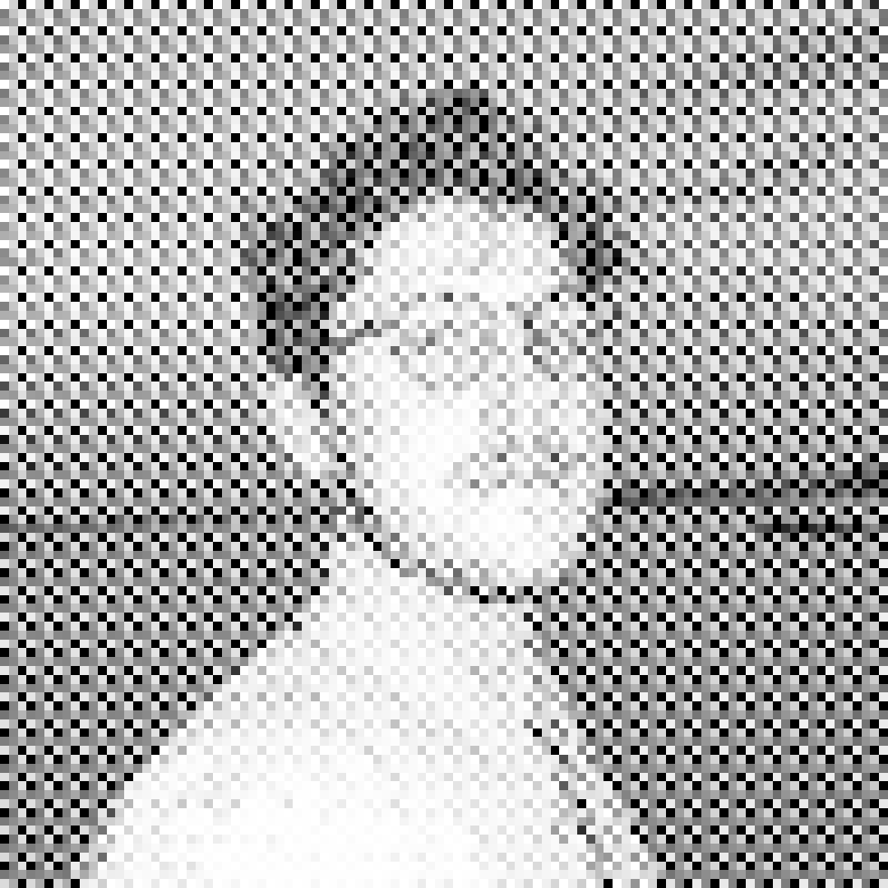
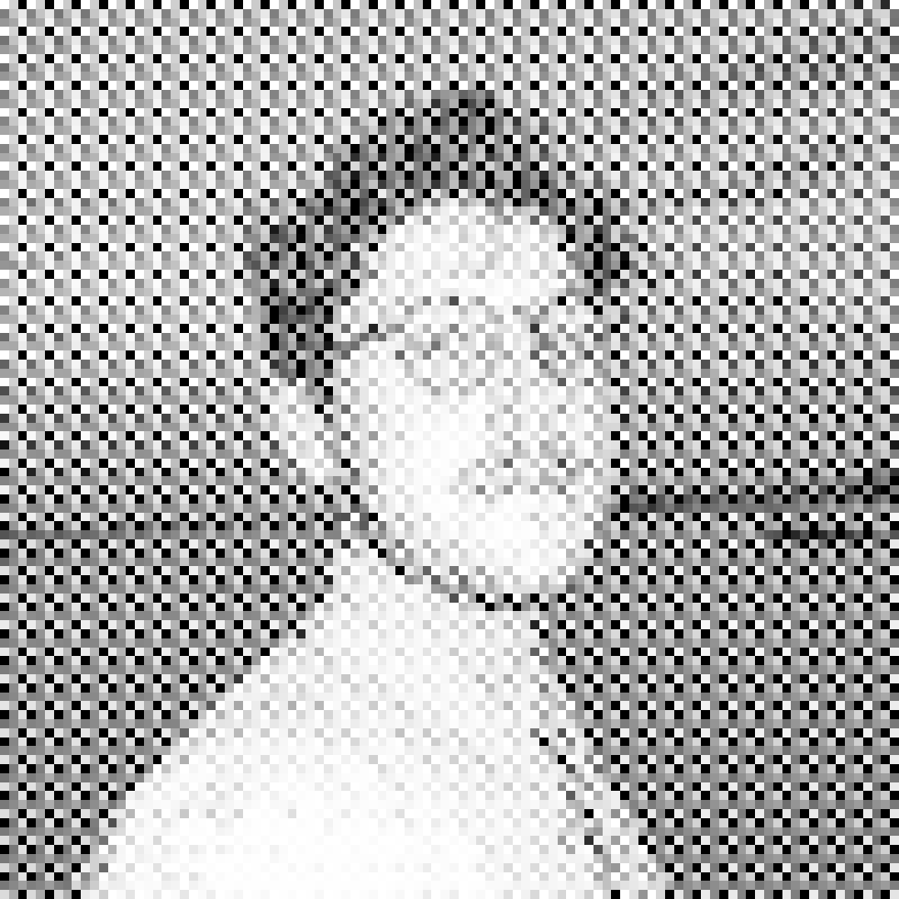

CONTACT
apohl.ch
ap@apohl.ch
+12286719376
IG: aubreyalfonzo
ME (?)
 

"GRAPHIC DESIGN, A NEW HISTORY" - STEPHEN F. ESKILSON
"CAPS LOCK" - RUBEN PATER
"BRAVE NEW WORLD" - ALDOUS HUXLEY
"A REPORT: CIRCLE OR CURVE" - ANDREW HERZOG
"ARTWORK" - VIRGIL ABLOH
I have had the pleasure to work with and for a wide array of industries, form architects to coffe-shops. Above all of these, I find design for music to be the most compelling, visceral, and rewarding work I have done. Live music is important not because it is entertaining, nor because it is profitable. Live music is important, essential, because the act of experiencing a musician (artist) lost, enthralled in their instrument (tool) sparks a burning and unavoidable urge to create. To feel what they have felt, and in turn make the listener (onlooker) understand their feeling, emotion, composition, and story. In our never ending chase for universal communication, music has been doing it for ages.
EDUCATION
MAS Master of Advanced Studies, Graphic Design
The Basel School of Design, HGK FHNW
Basel, CH - 2019 - 2021
MDES International Master of Design, Graphic Design
University of Illinois at Chicago
Chicago, U.S. - 2019 - 2021
BFA Bachelor of Fine Arts, Graphic Design
Mississippi State University
Starkville, MS - 2013 - 2017
MEDIUMS
Branding / Identity Design
Experimental Design
Typography
Printmaking
Creative Coding
Video / Motion Design
PHILOSOPHY
Design as a practice is (and should be) humanitarian. It is the duty of the designer, whoever they may be and whatever tools they find at their hands, to use their skills for the better of humanity. Our toolboxes are infinite and undefined. Our peers are just as vital as our tools. We should be humans first, commuinicators second, both with love, patience, care, and kindness.
EXPERIENCE
Visiting Professor of Graphic Design
Mississippi State University
2021 - Present
Freelance Graphic Designer
Remote
2016 - Present
Internal Graphic Designer
Mabus Agency
2018 - 2019
AWARDS
Work displayed at Galarie 143
Lorräch, DE - 2021
Winner of the DHS Poster Design Competition
Basel, CH - 2020
Work displayed in Transient Space
Manchester School of Art
Submitted by Playlab, Inc.
2018
Pink! Hartford School for the Arts
Poster Competition Finalist
2016
Skopje International Poster Competition
Finalist
2016
1st Place MSU Edible Type Awards
2015
CONTACT
apohl.ch
ap@apohl.ch
+12286719376
IG: aubreyalfonzo
ME (?)
EDUCATION
MAS Master of Advanced Studies, Graphic Design
The Basel School of Design, HGK FHNW
Basel, CH - 2019 - 2021
MDES International Master of Design, Graphic Design
University of Illinois at Chicago
Chicago, U.S. - 2019 - 2021
BFA Bachelor of Fine Arts, Graphic Design
Mississippi State University
Starkville, MS - 2013 - 2017
EXPERIENCE
Visiting Professor of Graphic Design
Mississippi State University
2021 - Present
Freelance Graphic Designer
Remote
2016 - Present
Internal Graphic Designer
Mabus Agency
2018 - 2019
MEDIUMS
Branding / Identity Design
Experimental Design
Typography
Printmaking
Creative Coding
Video / Motion Design
PHILOSOPHY
Design as a practice is (and should be) humanitarian. It is the duty of the designer, whoever they may be and whatever tools they find at their hands, to use their skills for the better of humanity. Our toolboxes are infinite and undefined. Our peers are just as vital as our tools. We should be humans first, commuinicators second, both with love, patience, care, and kindness.
"GRAPHIC DESIGN, A NEW HISTORY" - STEPHEN F. ESKILSON
"CAPS LOCK" - RUBEN PATER
"BRAVE NEW WORLD" - ALDOUS HUXLEY
"A REPORT: CIRCLE OR CURVE" - ANDREW HERZOG
"ARTWORK" - VIRGIL ABLOH
I have had the pleasure to work with and for a wide array of industries, form architects to coffe-shops. Above all of these, I find design for music to be the most compelling, visceral, and rewarding work I have done. Live music is important not because it is entertaining, nor because it is profitable. Live music is important, essential, because the act of experiencing a musician (artist) lost, enthralled in their instrument (tool) sparks a burning and unavoidable urge to create. To feel what they have felt, and in turn make the listener (onlooker) understand their feeling, emotion, composition, and story. In our never ending chase for universal communication, music has been doing it for ages.